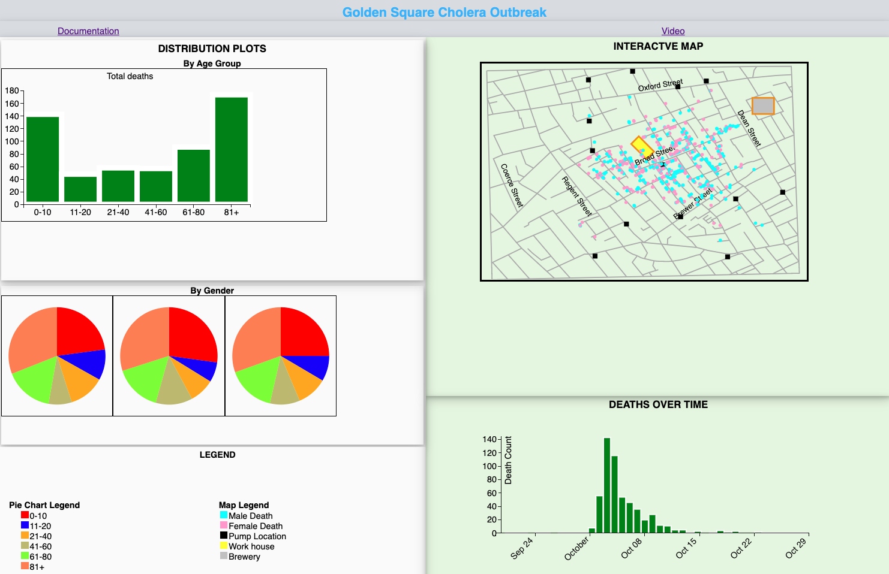

The Design Process
Early in the design process, the only element I was sure had to be there was the map, with some form of items to show the location of each death on the map. Obviously, in addition to using these markers to show the location of the death on the map, I realized I could use the “color" medium on the same marker to show the “gender” for each death.
I also decided to use other markers with a different color to show the location of the pumps on the map.At this point, the plan of how the map was going to look like was getting more solid. I created a sketch to see how it would look.

Next on the to do list was to come up with what kind of charts I could add to my page to make it more informative, and to allow some kind of interaction between charts/map. The first candidate is the timeline charts showing how many people died over time. On this chart, my initial plan was to put stacked bars, where the genders are reflected using the color medium. The sketch I had in mind look like the picture show below:
After coming up with these 2 main items of my design, I started thinking about which interaction I would want to see between the 2. At first, I wanted to create a tool tip that would show information such as age and date of death when hovered over the death location on the map, then highlight that date of death on the timeline chart.
Now that I had all the important components of the design decided, I started think of what I could add to my design to make it more informative, using the data that was provided. I realized that I could add charts to show the distribution of the deaths by age group using another stacked bar graph, and by gender using a pie-chart. This brought the total of the available graphs to 3 in addition to the map, which would give me more degrees of freedom when it comes to deciding on which interaction effects to add.


However, one important question was still looming: How should all these graphs be placed on the page in order to easily convey the information, while keeping the aesthetic at the same time. I went back to the drawing board to work on this.
I had 3 main ideas:
1. 4 tiles of equal sizes, one for the map, and 3 for the the 3 graphs

2. Map as main tile, and the 3 graphs on the side as secondary tiles

3. Have 2 main items, and 2 secondary tiles on the top.

4. Place the map in the top right corner and the timeline graph below it. Then put the age graph in the top left corner, and a pie-chart right below it .
I quickly renounced on idea#1 because all the 4 components of my design would end up being minimized. While idea#2 was the most aesthetically pleasant, I felt that I could have more than just one central component to my design that just the map. So, I ended up choosing idea#4 because it has 2 main components larger, but can still allow the viewer to see more information on the left side. I later realized that the pie-chart did not need much space, so I ended up making 3 pie charts with more details
Now I had the whole concept. It was time to implement it. During the implementation phase, there are some things that I was doing differently from what I had planned, due to the relevance, level of intricacies their implementation would present, and the amount of time it would take me to figure them out. That include the following:
- Since the blue and pink colors have been commonly used to represent respectively the male and female in the western culture, I decided to use them to represent the same in my design.
- The black color was chosen to represent the pumps in order to keep the contrast with the blue and pink colors used for gender.
- Since it was taking me too long to make stacked bars, I decided not to use them. For the timeline chart, I decided to use its interaction with map to show the gender directly in the map. For the Age Group chart, its interaction with the pie charts shows the number of deaths that happened within each age group, and each gender.
- I also added an interactive legend that explains the colors used on the map and in the pie-charts
- Finally, decided to add a tool tip interaction to the map showing the age of each death and the associated age group.
The final step was chose colors and check my design with a Color blind simulation tool
The final design ended up looking like this
The tool used can be found at https://www.color-blindness.com/coblis-color-blindness-simulator/
References
Project details: https://khreda.com/teaching/fall2021/H517/project1/
Bar graph, linking: https://khreda.com/teaching/fall2021/H517/schedule.html
Data location: https://khreda.com/teaching/fall2021/H517/project1/
pie chart: https://www.youtube.com/watch?v=ofaQUzBIrp0
bar graph: https://www.youtube.com/watch?v=BDpBAFvdjYo&t=619s
zoom: https://bl.ocks.org/saifulazfar/dd5f14926bb3b1ef19a6f734c6891545
Color picking: https://coolors.co/001524-15616d-ffecd1-ff7d00-78290f
Blindness check: https://colorbrewer2.org/#type=diverging&scheme=PuOr&n=6
Tooltip: https://www.youtube.com/watch?v=M3kbQnXeFnY
Color Blindness simulation tool: https://www.color-blindness.com/coblis-color-blindness-simulator/